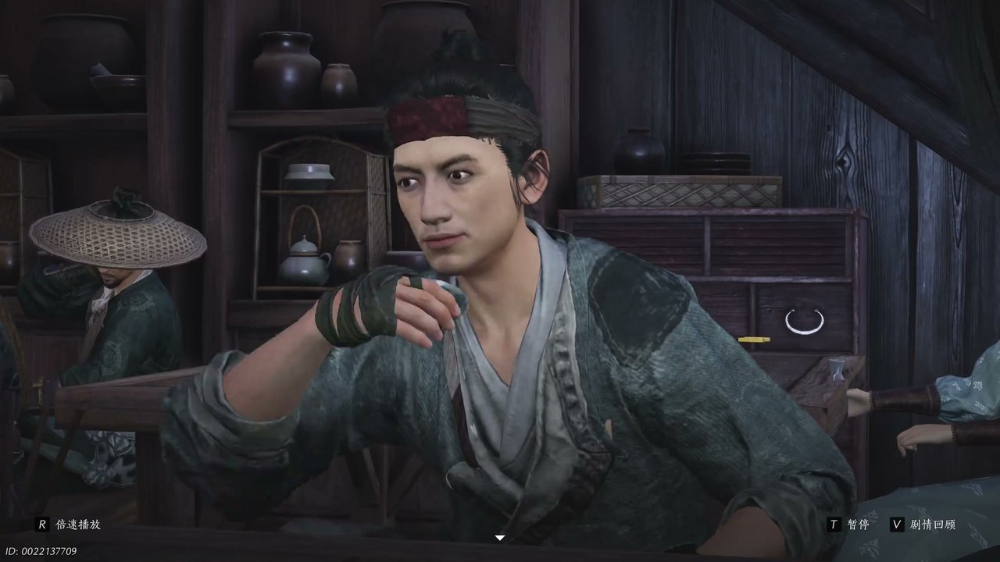
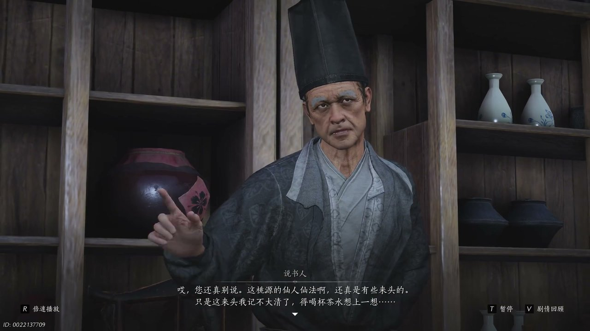
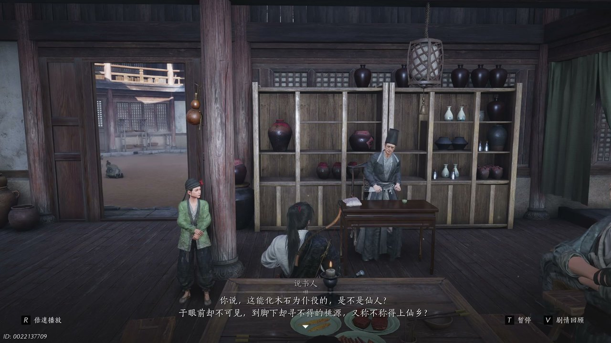
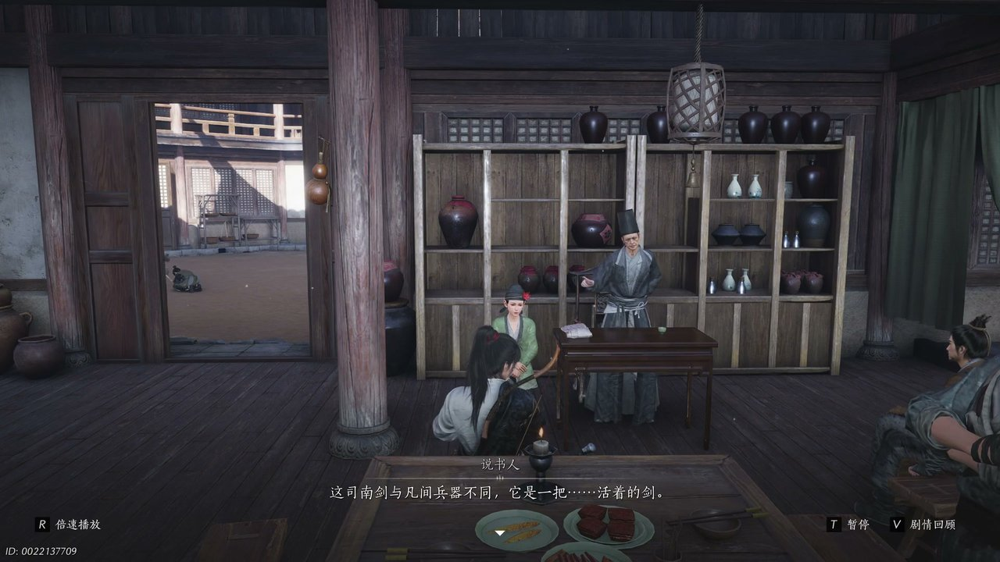
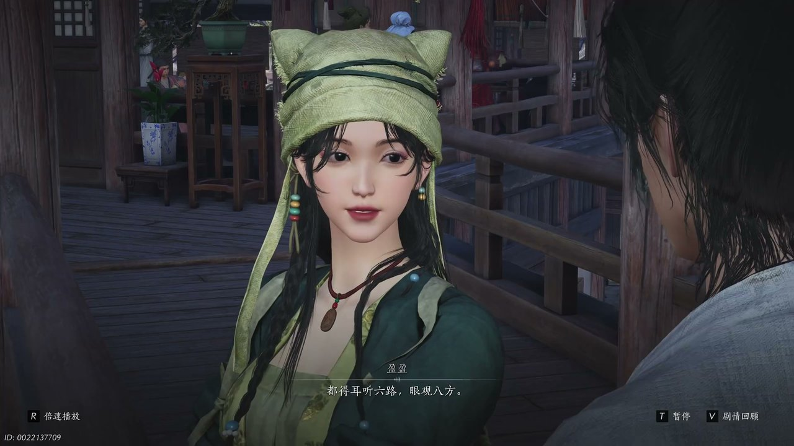
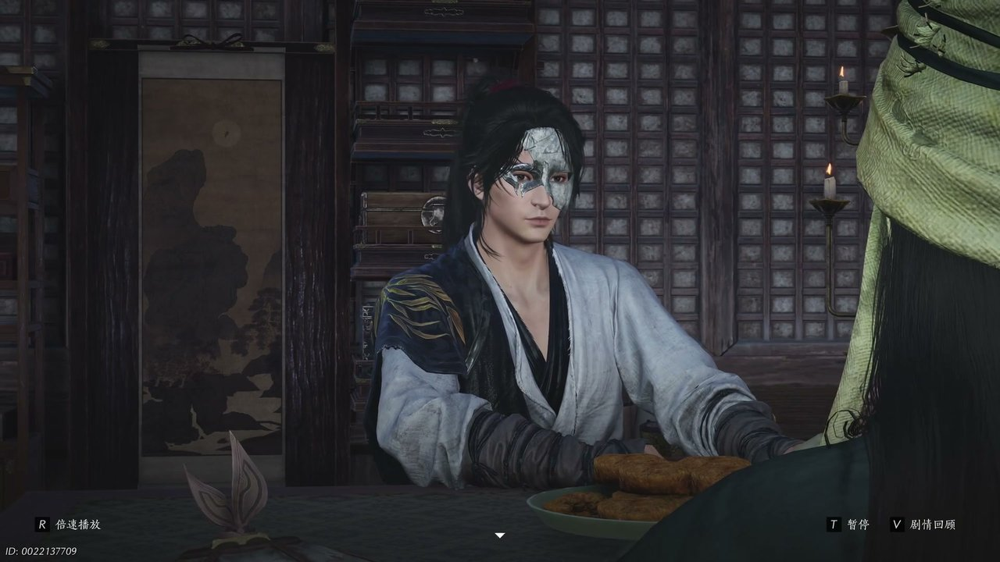

燕云背后的故事：第19集 运镖
燕云背后的故事：第19集 运镖

我将严格依据SRT字幕时序、上集剧情伏笔与指定创作规范，规整开篇回顾、六段正文剧情与结尾总结，贴合人物称呼、字数及排版要求，完整呈现第19集运镖剧情。

市井茶肆人声嘈杂，木桌竹椅错落排布，往来食客闲谈不休，说书人立于台前折扇轻摇，缓缓诉说江湖异闻。鬓发斑白的刘罗锅倚坐桌边，神情沧桑，语气满是感慨地开口：“老子从开御年间就在外边跑了，二十年来把能去的地方都走了一遍。”他抬手拂过衣衫，眼底尽是疲惫，接着叹道：“不是再打仗，就是准备打仗，这看了一圈啊，也就开封好些。”说书人闻言微微颔首，接过话头娓娓道来，谈及乱世之中难得安稳之地。刘罗锅摇头轻叹，目光望向窗外纷乱市井，继续说道：“天资脚下都不安稳，哪来的桃花园避风港。”周遭食客纷纷侧耳倾听，有人低声附和，有人面露疑惑，喧闹的茶肆瞬间安静大半，所有人都被桃园秘境的传闻吸引，静待说书人后续讲解。

说书人轻敲醒木，收拢全场目光，语气愈发郑重，将桃园秘境的玄妙缓缓道来。他抬手比划，神情肃穆地说道：“老有所中，壮有所用，幼有所长，官寡孤独废疾者，皆有所养。”寥寥数语勾勒出桃园的世外模样，随即话锋一转，揭秘桃园不凡之处：“若这桃园是一群凡人，在隐秘山野间见得一小小村落，刀兵一起确实风雨飘摇。”他稍作停顿，吊起众人兴致，接着高声说道：“可要是这桃园里住着的，是一群仙人哪。”刘罗锅闻言面露诧异，打趣道：“你看看看，仙人老祖都出来了，那你接下来该不是要说那桃园，是天上仙宫里边住着城阿玉兔吧。”说书人轻笑摆手，坦言道：“您还真别说，这桃园的仙人仙法呀，真是有些来头的，只是这来头，我记不大清了，得喝杯茶水享胜一享。”

茶肆小童闻声上前，少东家抬手赏出一吊茶钱，小童躬身道谢，高声告知贵客赏钱、茶水滚烫。说书人得茶水润喉，再度开口，引古论今佐证桃园仙人的本事。他缓缓说道：“古有章粮食驴和黄石寿书，其门顿甲，只几块石头布下，便得白五连天、横声迷津，总有大军一寻不着诸路，草风弄雨可称仙人。”话音未落，他又列举典故，继续讲解：“又有诸葛孔明，造木牛流马，方复驱逃一脚四足，无须草料水石，在一岁凉日行二十里，而人不大牢，肉体繁胎竟实死如生，可称仙人。”随后他回归正题，目光环视众人，朗声发问：“这桃园仙人可呼风唤雨、照雷银雾，又能取木石死物为己所用，这能画木实为蒲艺的，是不是仙人。”

说书人话锋一转，引出桃园秘境中的至宝，神秘的斯南剑，瞬间勾起全场好奇。他神色郑重，缓缓讲述：“桃园仙人有一宝剑，名曰斯南，这斯南剑与凡剑兵器不同。”一旁的高强按捺不住，骤然出声接话：“它是一把活着的剑。”说书人点头附和，细细拆解斯南剑的玄妙：“正是，凡剑铁剑，再怎么封立也是死物，得是主人御剑杀敌，可诸位行走江湖，总听过一二宝剑御险、翁铭大作、惊醒主人的江湖传闻。”他抬手抚须，道出此剑的独特之处：“宝剑怎会自名，皆因与人相伴日久，生出微弱灵性，而那斯南剑的神业之处，便是它天生灵至万如湖，生就一颗铁星，却知爱知恨。”爱恨分明的活剑设定，让在场众人无不惊叹，纷纷低声议论这柄绝世奇兵。

茶肆众人热议不休之时，盈盈悄然现身，与少东家立于僻静角落，私下谈论桃园传闻。盈盈眉眼灵动，笑着对少东家说道：“当伤人和当大侠，有个共通之处，你猜是什么？”不等少东家思索，她便揭晓答案：“都待耳听六路。”少东家顺势接话：“眼观八方，说不过你。”盈盈轻笑一声，神色转为认真，低声问道：“好大侠，你听见他们说的了吗？二世之中的桃花园，这可是开封风头正劲的话题，这不，说说的为了朗课，都不讲聚宝盆的故事了。”少东家眸光沉静，早已看透传闻背后的蹊跷，静静聆听盈盈讲述开封城内人人热议桃园秘境的乱象，心中已然生出诸多盘算，察觉这场火热传闻绝非偶然。

盈盈俯身凑近，追问少东家对桃园的看法，好奇这热议之地究竟是清幽静土还是凶险迷局。少东家目光深邃，条理清晰地拆解其中玄机，缓缓说道：“若真有桃园，这个地方不会是一两天建成，之前江湖上没听闻桃园的消息，想必是因为他们隐世不出，故意藏了踪迹。”他稍作停顿，语气愈发笃定，继续分析：“而一个隐世之地，突然在一席之间被公之于众，又将它吹捧得如此神异，引得人们纷纷探寻风口浪尖，能是什么好事，想必是有人想要引人过去，逼它现世。”最终他一语道破关键：“逼一个隐世之地现世，背后能有什么好事，所以桃园非桃园，这清静桃园或许是最不得清静的地。”盈盈闻言面露诧异，感慨少东家心思通透，随即告知少东家，有人将落神下落指向桃园，且此行凶险、得不偿失。
这一集看下来，我最大的感受就是江湖传闻皆为棋局，乱世秘境暗藏杀机。上一集里我们只知道幻境藏秘、画师溯源、金桃承缘，到了这一集，我们解锁桃园传闻、斯南灵剑、阎王运镖三条全新线索。桃园仙人究竟是隐世高人还是墨门修士？斯南活剑的爱恨灵性藏着什么秘密？阎王镖箱之中究竟封存着何等秘物？所有线索尽数收拢，市井热议的桃园秘境并非净土，而是有心人布下的迷局，少东家识破传闻假象，决意以身入局，探寻桃园真相、寻觅亲人踪迹。下一集，众人将护送阎王镖奔赴不见山，前路机关密布、追兵暗藏，运镖之路危机四伏。秘境迷局彻底浮出水面，江湖博弈全面升级！评论区说说你觉得斯南灵剑、桃园墨术暗藏哪些玄机，点赞关注，下一集解锁镖渡清河、险入仙山的高能剧情！
关于我们
📱 公众号名称：三天游戏
✍️ 作者：曾三天
扫码关注公众号，获取每日最新资讯

商务合作与版权
商务合作 / 内容投稿 / 品牌推广
请关注公众号「三天游戏」后台留言联系
版权声明：本文由作者整理，转载需注明出处。